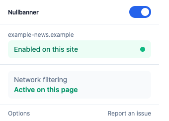
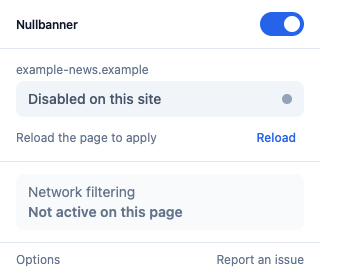
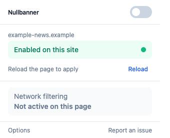
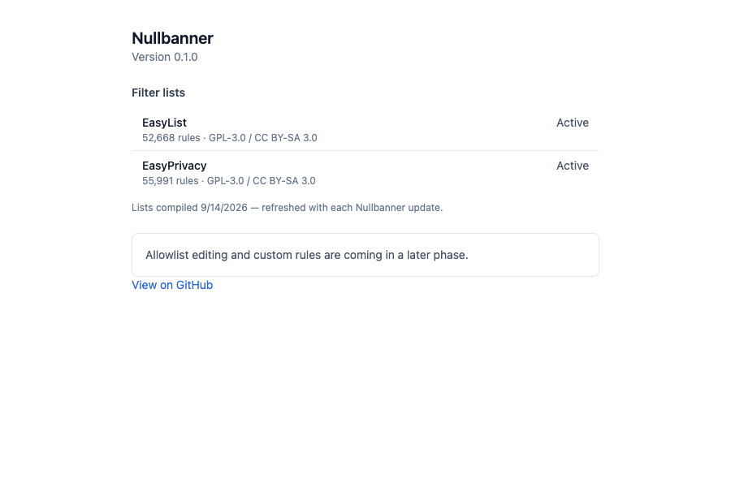

Nullbanner is a lightweight Chrome extension built on Chrome's native
declarativeNetRequest engine — fast, private network-level
blocking with no telemetry, and every line of it auditable on GitHub.
Not yet on the Chrome Web Store — see the install guide below.

The popup — global switch, per-site toggle, live protection status
Every design choice favors transparency and your privacy over convenience shortcuts.
Uses Chrome's built-in declarativeNetRequest API instead of injecting blocking logic at runtime — faster, and reviewable rule-by-rule.
Toggle protection for the site you're on without touching your global settings — never a broken checkout page again.
No eval, no dynamically fetched scripts, no filter lists silently downloaded and run. What you audit is what runs.
No broad host access requested. Nullbanner asks for exactly what network-rule blocking needs — nothing more.
Built with Preact instead of a heavier framework — a small, fast popup with no unnecessary bundle weight.
GPLv3 licensed. Read the code, fork it, or send a pull request — nothing is hidden behind a closed binary.
A quick look at the popup states and the options page.

Per-site toggle, with a reload reminder

Global on/off switch

Options page
Nullbanner isn't on the Chrome Web Store yet — load it from source instead.
git clone https://github.com/REPLACE_ME/nullbanner.git && cd nullbanner && pnpm install && pnpm build
Go to chrome://extensions and turn on Developer mode (top-right toggle).
Click Load unpacked and select the dist/ folder produced by the build.
Click the puzzle-piece icon in Chrome's toolbar and pin Nullbanner for one-click access.
Full instructions, development scripts, and test commands are in the project README.
Nullbanner ships in phases — here's what's done and what's next.
Manifest V3 setup, declarativeNetRequest network blocking, popup + options UI, test ruleset, CI.
CSS-based element hiding via content scripts, allowlist editing in the options page.
Scriptlet injection for harder-to-block ad patterns, YouTube-specific handling.
EasyList and EasyPrivacy are compiled into native network rules at build time (done); a small runtime-updated delta list between releases is next.
Chrome Web Store assets, privacy policy, listing, submission.
Cross-browser support beyond Chrome.